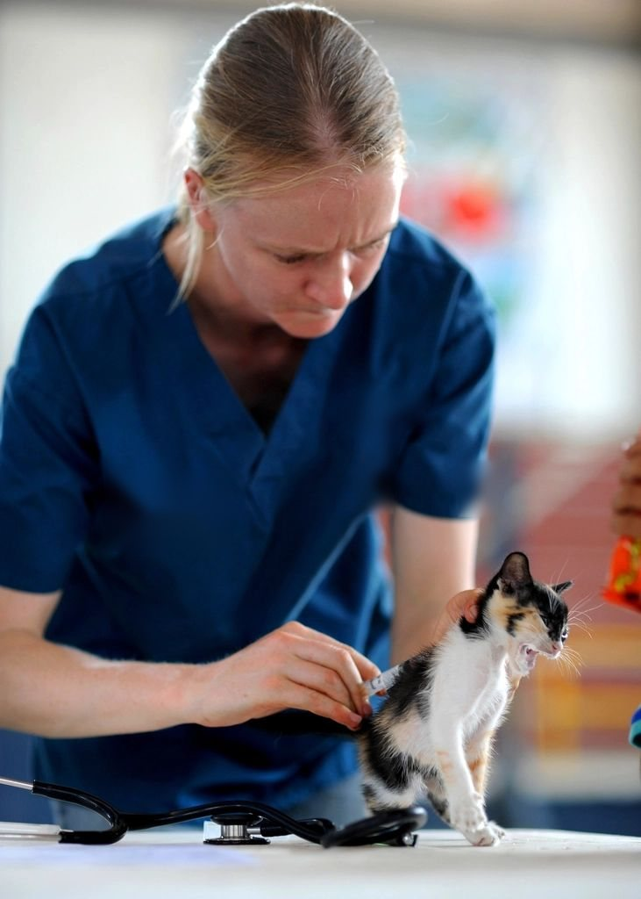

Beslenme
Yaşına ve türüne uygun mama, ölçülü öğün, her zaman taze su. Sofradan yemek vermeyin: soğan, sarımsak, üzüm ve çikolata gibi besinler zehirli olabilir.
Hastane koridorlarındaki levhalar gibi: aradığınız hizmeti rengiyle bulun. Her levhada ne zaman gelmeniz gerektiği, gelmeden önce nelere dikkat edeceğiniz ve bize neleri sorabileceğiniz yazıyor.
Genel sağlık değerlendirmesi ve tedavi planı
Dostunuzda bir şeyin değiştiğini fark ettiyseniz ilk adım muayenedir. Hekim önce sizi dinler: belirti ne zaman başladı, ne sıklıkla oluyor, iştahı ve su içmesi nasıl? Ardından dostunuzu muayene eder ve gerekiyorsa tedavi planını sizinle birlikte konuşur.
Kediler rahatsızlıklarını saklamakta ustadır: saklanmak, tüylerini bakımsız bırakmak ya da kum kabının dışına yapmak bile bir işaret olabilir. Köpeklerde oyuna isteksizlik ya da merdivenden kaçınma gibi küçük değişiklikler önemlidir.
Yavru ve yetişkin dönem aşıları, karne takibi
Aşılar, dostunuzu bulaşıcı ve bazıları ölümcül olabilen hastalıklara karşı korumanın temel yoludur. Hangi aşının ne zaman yapılacağı; türüne, yaşına, yaşam koşullarına (yalnız evde mi yaşıyor, dışarı çıkıyor mu, başka hayvanlarla teması var mı) ve geçmiş aşılarına göre hekim tarafından belirlenir.
Aşı günü dostunuzun genel durumu değerlendirilir. Halsiz, iştahsız ya da hastaysa randevu alırken bunu söyleyin; aşının zamanlamasına hekiminiz karar verir.

Genel örnektir; dostunuza uygun takvimi hekiminiz belirler. Doz sayısı ve aralıklar; yavrunun yaşına, daha önce aşılanıp aşılanmadığına ve yaşam koşullarına göre değişir.
Türkiye'de sahipli kedi ve köpeklerin kuduza karşı aşılanması yasal olarak zorunludur. Aşı genellikle 3 aylık yaştan sonra yapılır, tekrarları aksatılmadan sürdürülür ve kayıtları aşı karnesine ya da pasaportuna işlenir.
Sahipli kedi ve köpeklerin mikroçiple kimliklendirilip kayıt altına alınması da zorunludur. Kayıt ve kimliklendirmeyle ilgili sorularınız için arayın, bilgi verelim.
Yaklaşık dönemler
Tür ve doğum tarihi seçildiğinde dönemler burada listelenir.
Genel örnektir; dostunuza uygun takvimi hekiminiz belirler. Yavru daha önce aşılandıysa karnesini mutlaka getirin.
Pire, kene ve iç parazitlere karşı koruma
Kaşıntı, tüy dökülmesi ve deri sorunlarına yol açar, bazı hastalıkları da taşıyabilirler. Pire, yalnız evde yaşayan kedilere bile kıyafet, ayakkabı ya da diğer hayvanlar aracılığıyla ulaşabilir.
Çoğu zaman belirti vermeden ilerler. Bazı iç parazitler insanlara da bulaşabilir; düzenli koruma bu yüzden bütün ailenin sağlığı için önemlidir.
Ön görüşmeyle planlanan operasyon
Kısırlaştırma istenmeyen yavruların önüne geçer, dişilerde kızgınlık dönemlerini sona erdirir ve üreme sistemiyle ilgili bazı hastalıkların riskini azaltabilir. Uygun zamanlama türe, yaşa, ırka ve sağlık durumuna göre değiştiği için süreç her zaman bir ön görüşmeyle başlar.
Yaşı, aşı durumu ve genel sağlığı konuşulur, operasyon günü planlanır. Sorularınızı önceden not edin.
Aç bırakma ve suyu kesme talimatını hekiminiz verir; ne zaman başlayacağınızı ondan öğrenin.
Koruyucu yaka ya da giysiyle yarayı yalamasını önleyin; koşma ve zıplamayı hekimin söylediği süre boyunca kısıtlayın.
Dikiş bölgesine her gün bakın; kızarıklık, akıntı ya da açılma görürseniz arayın. Kontrol randevusunu kaçırmayın.
Beslenme, kilo, tüy, diş ve yaşlı dost bakımı
Hasta olmadan da konuşacak çok şey var. Beslenmeden tüy bakımına kadar merak ettiklerinizi sorun; dostunuzun yaşına ve yaşam düzenine göre birlikte değerlendirelim.
Yaşına ve türüne uygun mama, ölçülü öğün, her zaman taze su. Sofradan yemek vermeyin: soğan, sarımsak, üzüm ve çikolata gibi besinler zehirli olabilir.
İdeal kiloda kaburgalar hafifçe bastırınca hissedilir, yukarıdan bakınca bel çizgisi görünür. Fazla kilo eklemleri ve kalbi yorar; kilo planını hekimle yapın.
Düzenli tarama tüy yumağını ve keçeleşmeyi azaltır. Ani dökülme, kızarıklık, kepeklenme ya da sürekli kaşıntı bir muayene nedenidir.
Uzayan tırnaklar yürüyüşü bozar. Kulakta koku, koyu akıntı ya da sık baş sallama görürseniz kulağa çubuk sokmadan getirin.
Ağız kokusu, diş taşı, diş etinde kızarıklık ya da çiğnerken zorlanma ağız sağlığıyla ilgili bir işarettir; erken bakılması işi kolaylaştırır.
Yaş ilerledikçe su içme, idrar, iştah ve hareketlilikteki küçük değişiklikler önem kazanır. Hekiminiz daha sık kontrol önerebilir.
Tedavi ve operasyon sonrası takip ziyaretleri
Tedavinin işe yarayıp yaramadığı, dikişlerin iyileşip iyileşmediği ya da ilacın değişmesi gerekip gerekmediği kontrol ziyaretinde anlaşılır. Dostunuz iyileşmiş görünse bile hekimin istediği kontrolü atlamayın.